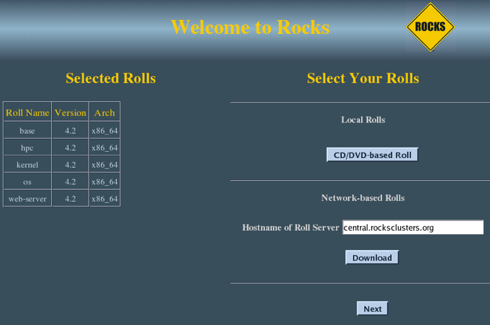

Condor Roll: Users Guide: 
| ||
|---|---|---|
| Prev | Chapter 2. Installing the Condor Roll | Next |
The Condor Roll can be installed during the Frontend installation or added to a running frontend. In either case, client nodes must be (re)installed.
The Condor Roll is added to a Frontend installation in exactly the same manner as the required base Roll. Simply select the Condor roll as you would any network- or CD-based roll.

Once the Condor Roll is loaded the installer will continue installation automatically with no further user input. The Frontend will be configured as a condor pool manager and a submit node. Nodes of appliance type "compute" will will be configured as submit/execute nodes. Other appliances can be made part of the execution pool through setting an appliance attribute and reinstalling those nodes.